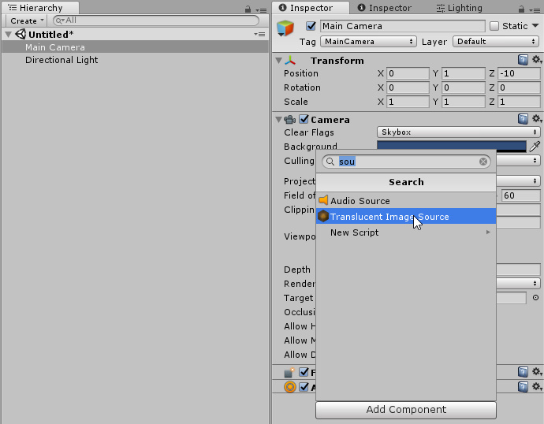
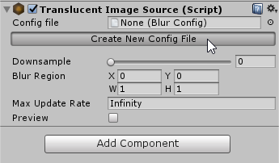
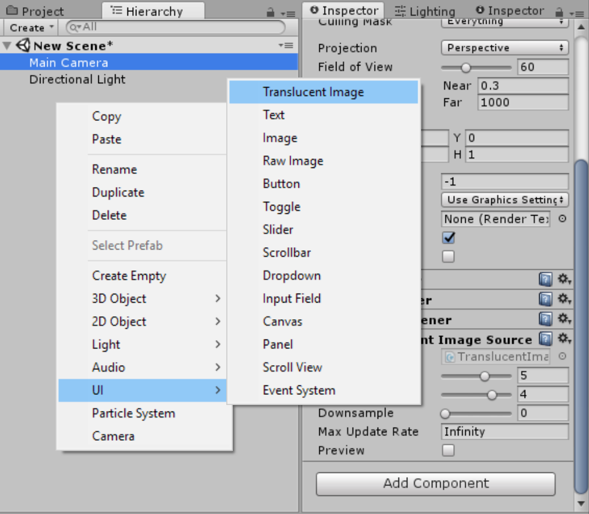
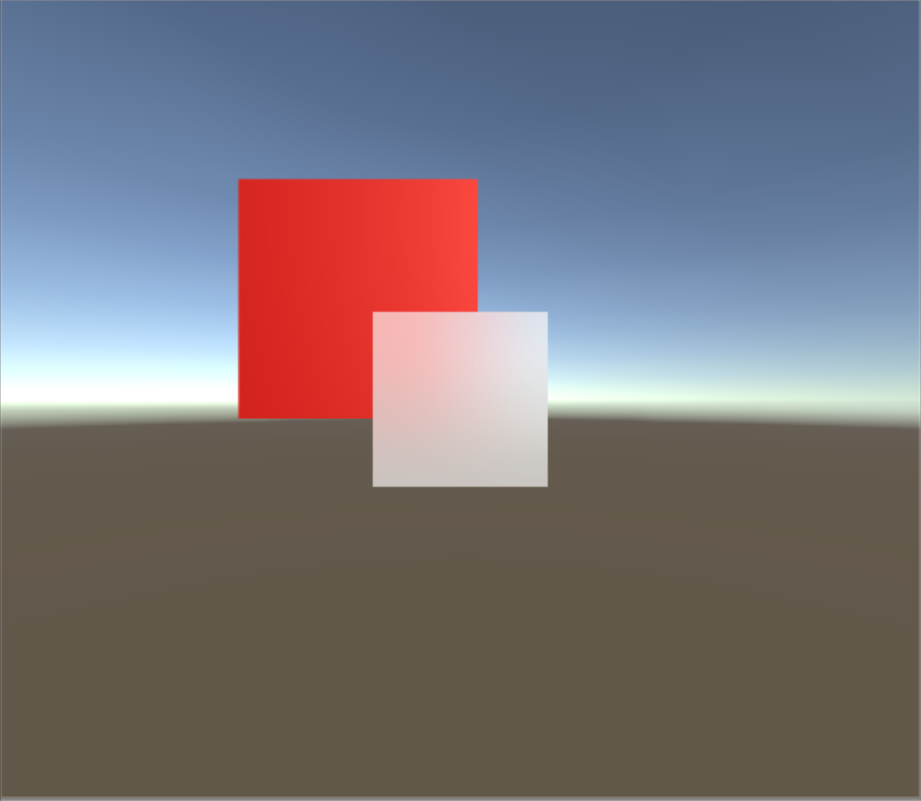

Getting Started
Add
Translucent Image Sourceto your main camera.
Create a Blur Config asset, or assign an existing one.

Create
UI -> Translucent Imageas you would with normal UI Image.
That's it!

Warning
By default, Translucent Image will use a default Material. To make sure your Translucent Image look are not affected by asset update, create your own Material. See Customize section for more info.
Note
Sometime the effect does not shown up immediately. If that happen, just switch to play mode. The effect willcontinue to show even when exit play mode.